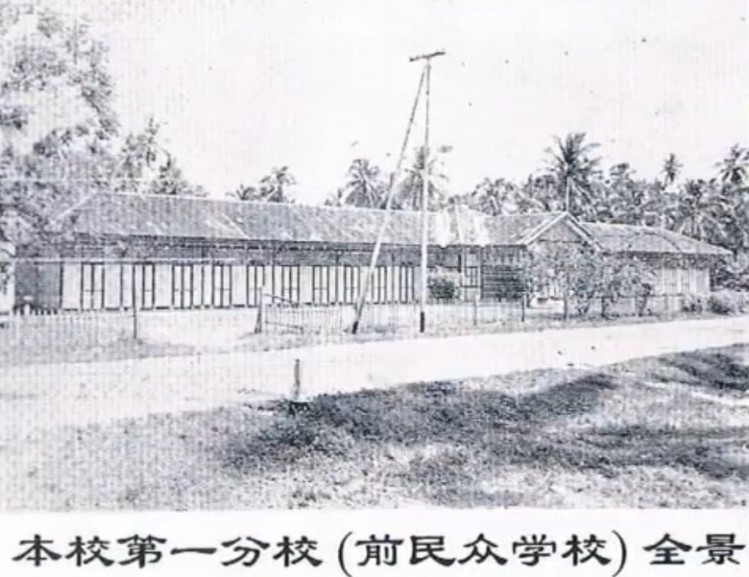
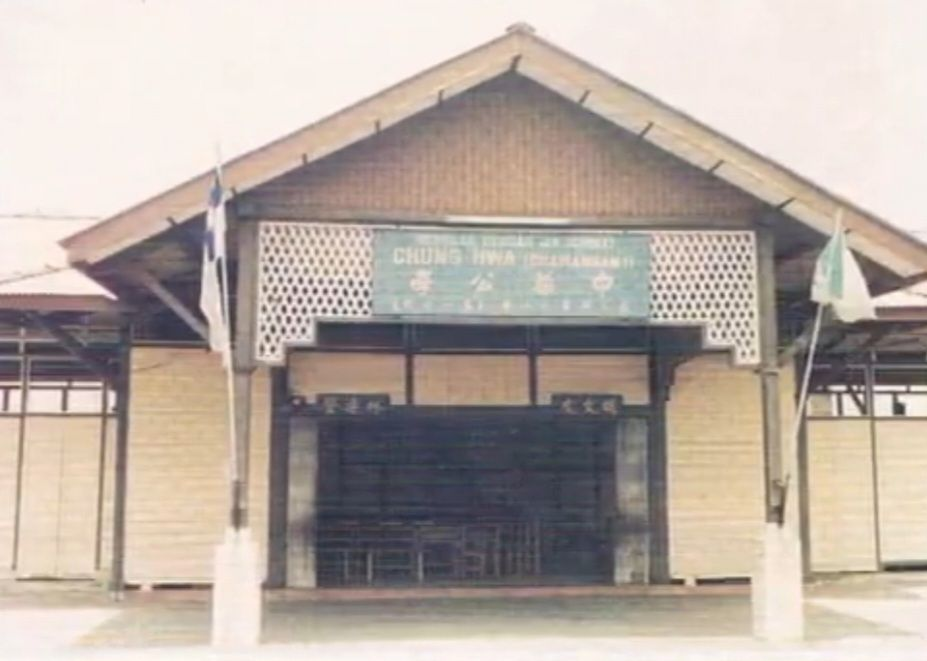
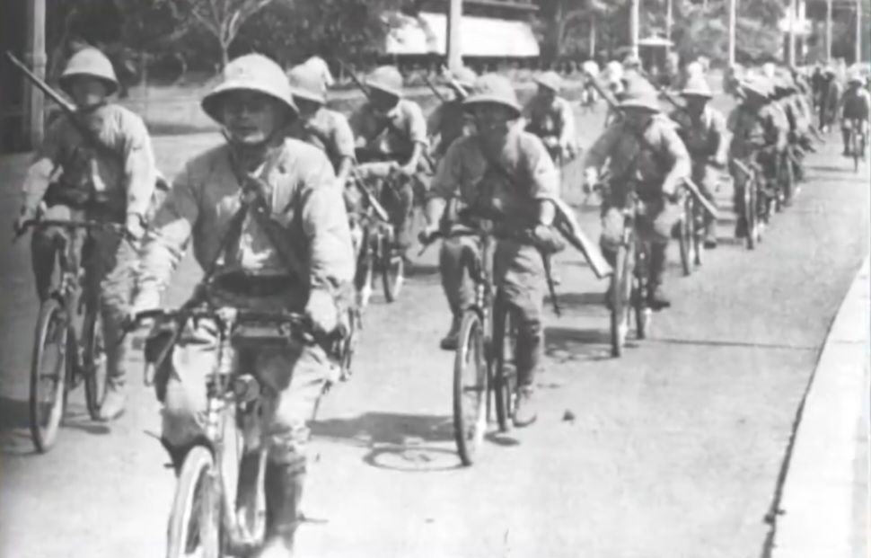
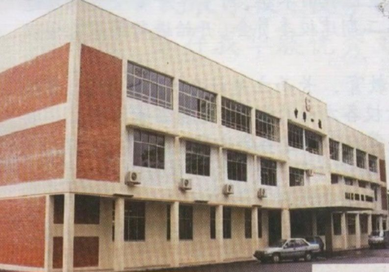
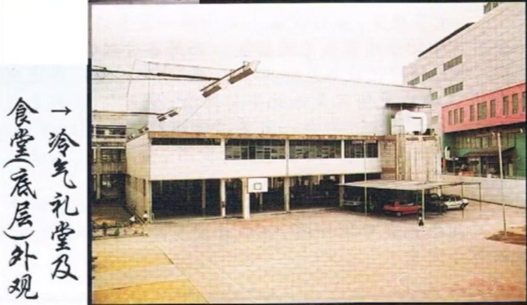
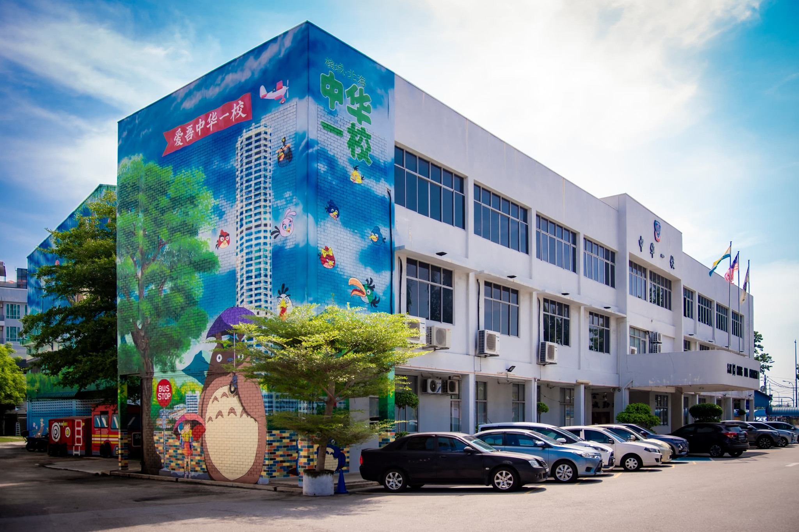
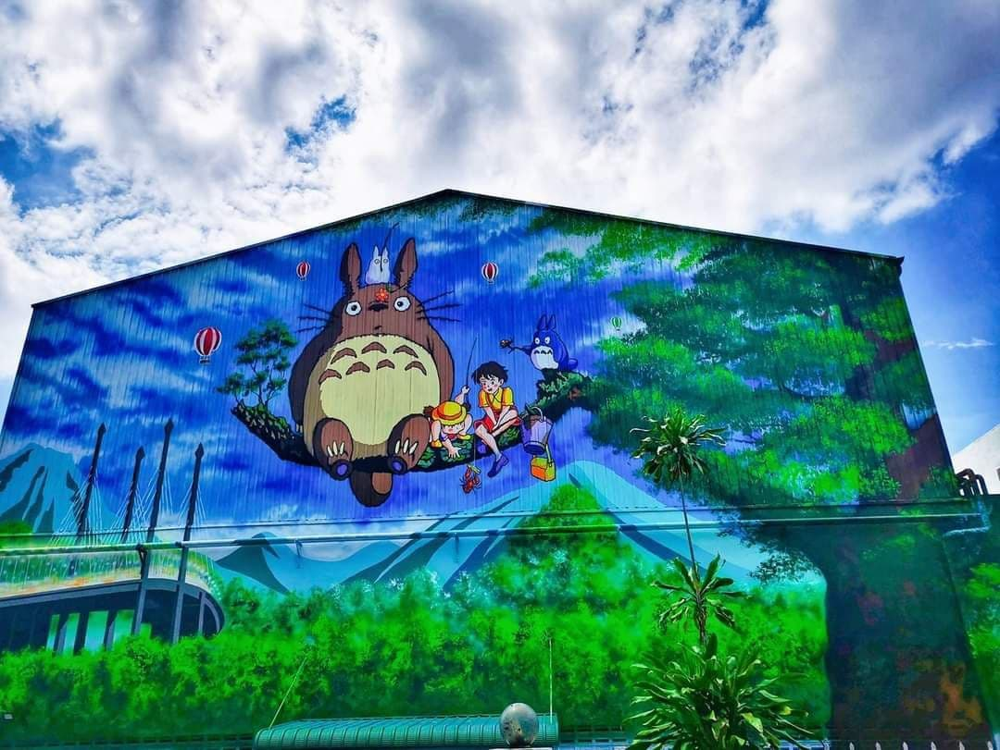

School History


- SJKC CHUNG HWA 1’s History : Originally this school was named Min Zhong. In the beginning, classrooms were rented from the public. The number of students was 200 people while the teachers were 7 people.


- In 1941, the school had to be closed due to Japanese rule. After peace was restored, the Chinese united SJKC CHUNG HWA PUSAT, SJKC CHUNG HWA 1 and SJKC CHUNG HWA 2, along with SJKC CHUNG HWA 3. Hence, four Chung Hwa Schools under the management of the same Board of Directors. However, under the Education Rule, the four Chung Hwa schools had to be managed separately. Since the number of students increases every year, the construction of new school buildings cannot be delayed any longer.


- On 1.1.1975, the construction of the new school building was launched. A new three-storey building is expected to be built on the school grounds within 3 years. All the Chinese attended the donation activities that were organized by SJKC CHUNG HWA 1.They donated a lot of money to help to build the new building. In addition, the construction of the second level school was also carried out to build 15 classrooms which were partly used as library, meeting room, headmaster's office and teacher's office. The Chung Hwa School Graduates Association also successfully collected a donation of RM 80,000.


- After two years, the facilities at the school are complete and perfect. Trees and flowers were also planted to make the school more beautiful.